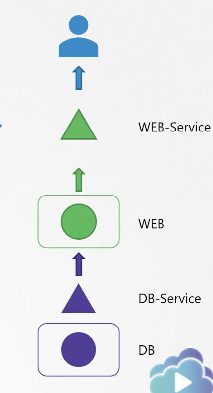
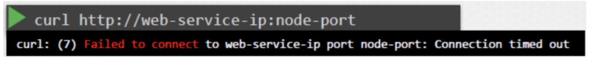
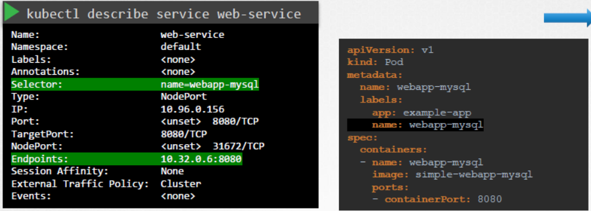
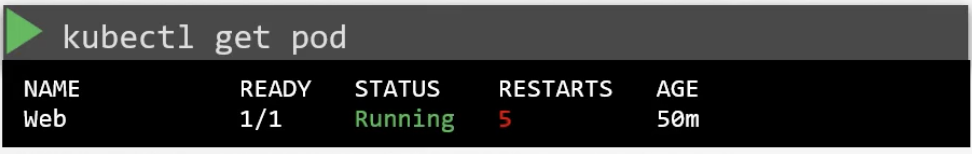
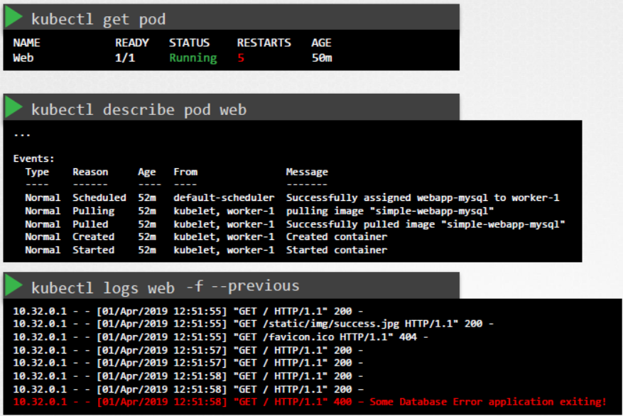
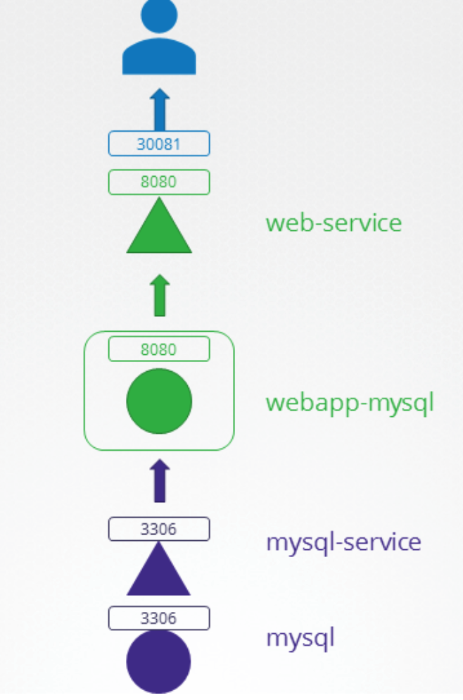

10. Troubleshooting
📑 Table of Contents
- 1. Application Failure Troubleshooting
- Systematic Two-Tier Diagnosis Flow
- Common Triage Scenarios & Solutions
- 2. Control Plane Failure Troubleshooting
- Manifest Directory & Bootstrapping
- Diagnosing kube-apiserver Failure
- Diagnosing etcd Failure & Quorum Loss
- 3. Worker Node Failure Troubleshooting
- Triage Steps on Failing Nodes
- 4. Network Failure Troubleshooting
- CoreDNS Failure Diagnosis
- Kube-Proxy & iptables Troubleshooting
- CNI Plugin Verification
- 5. Interactive Troubleshooting with kubectl debug
- Ephemeral Containers
- Pod Copy with Custom Entrypoint
- Worker Node Host Chroot Access
1. Application Failure Troubleshooting
Systematic Two-Tier Diagnosis Flow
When users report application downtime in a multi-tier setup (e.g., Web Frontend ➔ Database), triage step-by-step across all layers:

-
Verify Web Access (Front-End Layer): - Test connectivity to the NodePort or ClusterIP:
bash curl http://<node-ip>:<node-port>
-
Inspect Web Service & Endpoints: - Verify that the Service has discovered healthy Pod endpoints:
bash kubectl describe svc web-service kubectl get endpoints web-service

- IfEndpoints: <none>, verify that the Serviceselectormatches the Pod labels exactly. -
Check Web Pod Health & Logs: - Verify pod status and restart count:
bash kubectl get pods -o wide kubectl describe pod <web-pod-name>- Stream container logs or inspect previous crashed instances:bash kubectl logs <web-pod-name> -f kubectl logs <web-pod-name> --previous

-
Verify Backend Database Service & Pod: - Verify DB Service name, port, targetPort, and selector:
bash kubectl describe svc db-service- Inspect DB Pod logs for database engine crashes or permission errors:bash kubectl logs <db-pod-name>
Common Triage Scenarios & Solutions
Scenario 1: Service Name Mismatch
- Symptom: Web application fails to resolve backend database hostname.
- Root Cause: Web pod configuration expects
mysql-service, but the service was created asmysql. - Resolution: Recreate the service with the matching name:
bash kubectl -n alpha delete svc mysql kubectl -n alpha expose pod mysql --name=mysql-service --port=3306 --target-port=3306
Scenario 2: TargetPort Misconfiguration
- Symptom: Service endpoints exist, but connections time out or drop.
- Root Cause:
targetPortin the Service manifest does not match container port: ```yaml apiVersion: v1 kind: Service metadata: name: mysql-service namespace: beta spec: ports:- port: 3306 targetPort: 8080 # INCORRECT: MySQL listens on 3306 selector: name: mysql type: ClusterIP ```
- Resolution: Change
targetPortto3306and apply:bash kubectl -n beta patch svc mysql-service --type='json' -p='[{"op": "replace", "path": "/spec/ports/0/targetPort", "value": 3306}]'
Scenario 3: Label Selector Mismatch
- Symptom: Service endpoints show
<none>. - Root Cause: Service selector
name: mysqldoes not match Pod labelapp: mysql. - Resolution: Align the selector in the Service definition:
```yaml
apiVersion: v1
kind: Service
metadata:
name: mysql-service
namespace: gamma
spec:
ports:
- port: 3306 targetPort: 3306 selector: app: mysql # Matched to Pod metadata.labels ```
2. Control Plane Failure Troubleshooting
Control plane components (kube-apiserver, etcd, kube-scheduler, kube-controller-manager) run as Static Pods managed directly by the Kubelet on control plane nodes.
Manifest Directory & Bootstrapping
Static pod manifests reside in:
/etc/kubernetes/manifests/
├── kube-apiserver.yaml
├── etcd.yaml
├── kube-scheduler.yaml
└── kube-controller-manager.yaml
- Modifying any manifest triggers the local
kubeletto restart that container immediately. - A YAML syntax error or invalid command flag in any manifest causes the component to crash or enter a crash loop.
Diagnosing kube-apiserver Failure
If kubectl returns The connection to the server <host>:6443 was refused:
# 1. SSH into the control plane node
# 2. Check if the kube-apiserver container is running via CRI
sudo crictl ps -a | grep kube-apiserver
# 3. View container log directly from disk (bypassing dead API server)
sudo crictl logs <container-id>
# Or read raw container logs:
ls -lt /var/log/pods/kube-system_kube-apiserver*/
# 4. Check for syntax errors or invalid flags in the manifest
cat /etc/kubernetes/manifests/kube-apiserver.yaml
# 5. Check if control plane certificates have expired
kubeadm certs check-expiration
Diagnosing etcd Failure & Quorum Loss
etcd stores all cluster state. If etcd is unavailable, kube-apiserver cannot function:
# Check etcd member health
ETCDCTL_API=3 etcdctl --cacert=/etc/kubernetes/pki/etcd/ca.crt \
--cert=/etc/kubernetes/pki/etcd/server.crt \
--key=/etc/kubernetes/pki/etcd/server.key \
endpoint health
# Check etcd disk usage (NOSPACE alarm)
df -h /var/lib/etcd
3. Worker Node Failure Troubleshooting
When a worker node shows STATUS: NotReady in kubectl get nodes:
# 1. Inspect Node conditions and events
kubectl describe node <node-name>
Look for:
- Ready = False or Ready = Unknown
- MemoryPressure = True
- DiskPressure = True
- PIDPressure = True
Triage Steps on Failing Nodes
# 1. SSH into the failing worker node
# 2. Check Kubelet systemd service status
sudo systemctl status kubelet
# 3. If kubelet is inactive or failed, view recent failure logs
sudo journalctl -u kubelet -n 100 --no-pager
# 4. Check Container Runtime (containerd) service status
sudo systemctl status containerd
sudo journalctl -u containerd -n 50 --no-pager
# 5. Verify the CRI socket is responsive
sudo crictl info
# 6. Check if Linux Swap is enabled (Kubernetes fails if swap is on)
free -m
sudo swapoff -a
# 7. Check cgroup driver alignment in Kubelet config
grep -i cgroup /var/lib/kubelet/config.yaml
# Ensure cgroupDriver matches containerd (typically "systemd")
# 8. Restart services after fixing configuration
sudo systemctl daemon-reload
sudo systemctl restart containerd
sudo systemctl restart kubelet
4. Network Failure Troubleshooting
Network failures typically manifest as DNS resolution errors or inter-pod routing failures.
CoreDNS Failure Diagnosis
If pods cannot resolve service names (<svc>.<ns>.svc.cluster.local):
# 1. Check CoreDNS pod status
kubectl get pods -n kube-system -l k8s-app=kube-dns
# 2. View CoreDNS logs (common issue: loop plugin detecting upstream loop)
kubectl logs -n kube-system -l k8s-app=kube-dns
# 3. Test DNS resolution from a temporary debug container
kubectl run test-dns --rm -it --image=busybox:1.36 -- nslookup kubernetes.default.svc.cluster.local
Kube-Proxy & iptables Troubleshooting
If pods cannot reach Service virtual ClusterIPs:
# 1. Check kube-proxy daemonset pods
kubectl get pods -n kube-system -l k8s-app=kube-proxy
# 2. Check kube-proxy logs for iptables/IPVS errors
kubectl logs -n kube-system -l k8s-app=kube-proxy
# 3. Inspect iptables NAT rules on the node
sudo iptables -t nat -L KUBE-SERVICES -n -v
CNI Plugin Verification
# Verify CNI configuration files exist on the host
ls -la /etc/cni/net.d/
# Verify CNI plugin binaries exist
ls -la /opt/cni/bin/
5. Interactive Troubleshooting with kubectl debug
kubectl debug is the modern, non-invasive debugging standard for CKA:
Ephemeral Containers
When a distroless or minimal container lacks curl, netstat, or sh:
# Attach an ephemeral debug container with full diagnostic tools
kubectl debug -it <pod-name> --image=nicolaka/netshoot --target=<container-name>
Pod Copy with Custom Entrypoint
If a pod crashes immediately upon startup (e.g. wrong command or entrypoint):
# Copy the pod, override the entrypoint with an interactive shell
kubectl debug <pod-name> -it --copy-to=<new-pod-name> --container=<container-name> -- sh
Worker Node Host Chroot Access
If SSH access to a worker node is unavailable:
# Launch a privileged pod on the target node with the host root filesystem mounted at /host
kubectl debug node/<node-name> -it --image=busybox
# Inside the debug pod, chroot into the host OS:
chroot /host
# Now you have full access to systemctl, journalctl, /etc/kubernetes, etc.